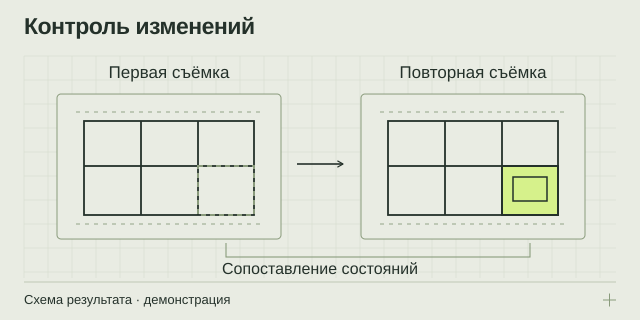

НАПРАВЛЕНИЕ 06 / ЗАКАЗЧИКАМ РАБОТ И ВЛАДЕЛЬЦАМ ОБЪЕКТОВ
Повторное сканирование и контроль изменений
Сопоставьте состояние объекта в разные даты и выделите изменения, которые можно достоверно различить по измерительным данным.
Совмещённые данные + карта изменений
Облака точек / PDF / CSV

Из задачи — в проверяемый результат
Повторная съёмка полезна, когда одного снимка состояния недостаточно: важно увидеть, что изменилось между этапами работ или наблюдений. Для осмысленного сравнения нужны совместимые данные, согласованные опоры и понятные условия измерения. Разница между двумя облаками может быть связана как с объектом, так и с особенностями съёмки. Поэтому метод сравнения и ограничения входят в результат вместе с визуализацией.
Для каких ситуаций подходит
Можно зафиксировать видимую геометрию до и после работ, сравнить выбранные участки на нескольких датах или подготовить материалы для дальнейшей инженерной оценки. Если требуется регулярное наблюдение, зоны и периодичность нужно определить заранее.
Подход особенно полезен, когда важно сохранить исходную картину и затем вернуться к ней для проверки. При этом факт изменения поверхности ещё не объясняет его причину и не определяет автоматически состояние конструкции.
Как организуется сравнение
- Определяется исходное состояние. Выбираются базовая дата и данные, пригодные для сравнения.
- Согласуются зоны и опоры. Фиксируются контролируемые элементы и условия совмещения.
- Проводится повторная съёмка. Учитываются доступ, охват и сопоставимость условий.
- Проверяются различия. Изменения анализируются с учётом точности и неопределённости исходных данных.
- Передаётся отчёт. В нём разделяются наблюдаемые изменения, неполные данные и вопросы для дальнейшего исследования.
Что входит в результат
- Наборы данных по датам с понятной структурой хранения и идентификацией этапов.
- Сопоставленные облака точек или другая согласованная геометрическая основа.
- Карта изменений и ведомость по контролируемым зонам.
- Пояснения к совмещению, охвату, точности и ограничениям сравнения.
Форма результата должна позволять связать каждое наблюдение с конкретным участком и периодом. Если данных для вывода недостаточно, это необходимо показать отдельно, а не скрывать за визуально убедительной картой.
Что подготовить для обсуждения
Укажите, какие изменения вас интересуют, на каких участках и между какими датами. Сообщите, есть ли базовая съёмка, кто её выполнял, в какой системе координат и сохранились ли сведения о контроле качества.
Важны возможные изменения доступа, наличие стабильных опор и требуемая периодичность. Если между измерениями на объекте будут перемещать оборудование, закрывать поверхности или менять маршруты, это следует учесть при планировании.
Что определяет стоимость и сроки
Расчёт учитывает число выездов, площадь и сложность зон, условия доступа, подготовку базовых данных, контроль совмещения и форму отчётности. Низкое качество архивной съёмки или несовместимые условия могут потребовать дополнительной работы либо ограничить возможные выводы.
До начала важно согласовать, какие различия требуется различать и как будет оцениваться надёжность сравнения. Порог отображения на цветной шкале должен соответствовать возможностям метода, а не только удобству визуализации.
Ответы перед заказом
Можно сравнить съёмки разными приборами?
Возможность зависит от качества, координат, охвата и условий получения данных. Разные приборы не исключают сравнение, но совместимость и ограничения нужно оценить заранее.
Любая разница означает движение конструкции?
Нет. Различия могут быть связаны с совмещением, точностью, препятствиями или изменением доступных поверхностей. Причины и значимость оцениваются отдельно.
Как часто нужно повторять съёмку?
Универсального интервала нет. Периодичность зависит от задачи, характера объекта и программы наблюдения; её определяют до начала работ совместно с ответственным специалистом.
Подготовьте вводные без лишней переписки
Откройте памятку: она помогает описать объект, собрать исходные данные и выбрать нужный результат.
Что подготовить для расчёта ↗ОТ ЗАДАЧИ К СОСТАВУ РАБОТ
Обсудим ваш объект
Подготовьте город, тип и примерную площадь объекта, цель работ и имеющиеся документы. В брифе можно собрать вводные и открыть письмо экспертному партнёру.
Экспертный партнёр — АНО «МСК-Эксперт»: +7 495 648-50-91 · официальный сайт и форма обращения ↗. При нажатии на почтовую ссылку откроется ваша программа: письмо отправляете вы.